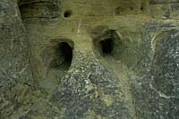

|
|
"Environmentally Sensitive Area". Please be careful where you walk and try not to disturb the natural environment. For additional information please contact Tourism Saskatchewan. | ||
| Petroglyph Park | |||
| GPS: | 49d 24.62m N | 105d 52.27m W | 3125 feet |
| Location: | 3 kms south of St. Victor. | ||
St Victor's petroglyphs (or rock carvings) are one of Saskatchewan's prehistoric mysteries. No one knows exactly who carved them, why they were carved, or even when they were carved. | |||
All we can be certain of, is that they provide us with clues to the lifestyle of a society which lived on Saskatchewan's plains hundreds of years ago, at a time pre-dating any of our written records. | |||
The rock carvings are very hard to see. The best time to see them is on a clear day towards sunset, when the shallow grooves cast shadows that define and outline the shapes. | |||

Most of the carvings are animal tracks. Of these, most are cloven-hoofed tracks, perhaps depicting buffalo, deer, or elk. | |||
Black and grizzly bear tracks are also present. Other carvings include turtles, human hands, feet, and heads, and at least one whole human figure. | |||
Some carvings are too worn to be deciphered, while still others are simply not understood. | |||
The carvings are located on the horizontal caprock of the sandstone cliff. Most petroglyphs are on the vertical face of similar cliffs. There are only four other "horizontal" sites in Canada. This is the only such site in the Prairie Provinces. | |||
Carving petroglyphs was important work. It took much time and effort to peck out the carving, then to grind and smooth the rough outline. This time and effort would not be spent, unless it was of great significance. | |||
 Theories are not facts. Using all available clues, evidence and data, archaeologists can form theories about the age of the petroglyphs and their carvers. New information could prove them right or wrong. | |||

It is thought that the petroglyphs were carved before 1750. There are no carvings of horses, nor it would seem, of horses' hooves. Since horses first appeared on the northern plains about 1750, the petroglyphs are probably older than that date. | |||
The carvers might have been the ancestors of modern Sioux and Assiniboine people. The human heads carved at the site resemble artifacts and petroglyphs connected to early Siouan-speaking cultures, perhaps linking these people to the carvings. | |||
Come and take a look for yourself. You could be the one to finally solve this mystery. Respect and preserve our heritage by not carving or defacing the site. | |||
| GPS: 49d 24.62m N, 105d 52.27m W, 3125 feet 30 July 96, 9:30 am, Fuji Velvia 50, F8 1/15-180s | |||